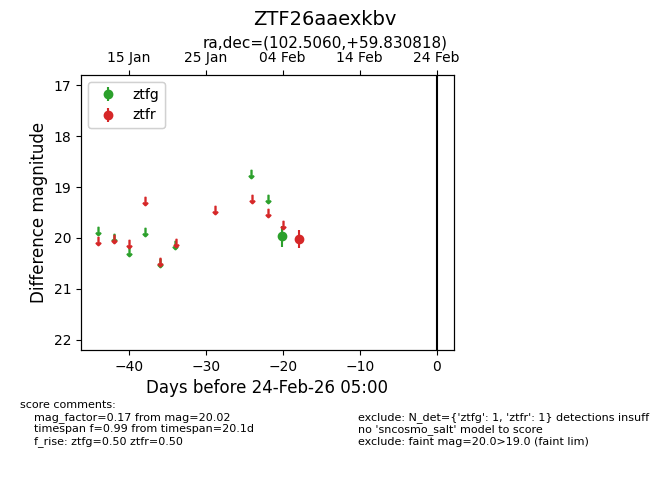
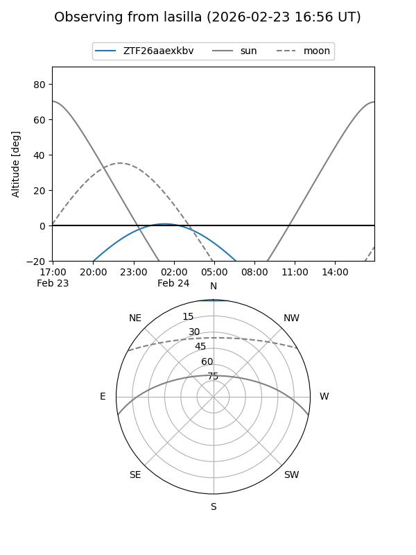
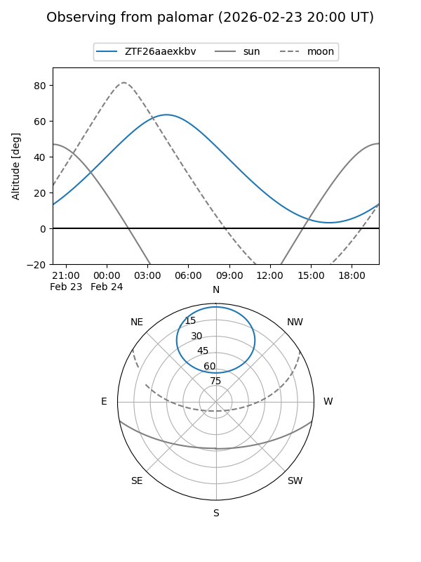

ZTF26aaexkbv
Target ZTF26aaexkbv at 2026-02-24 09:08
Aliases and brokers:
FINK: link
Lasair: link
ALeRCE: link
alt names
ZTF26aaexkbv (ztf,fink_ztf)
Coordinates:
equatorial (ra, dec) = 102.5060,+59.83082
equatorial (HMS+DMS) = 06:50:01.43,+59:49:50.94
galactic (l, b) = (156.0338,+23.04531)
Flags:
Photometry:
last ztfg=19.97, ztfr=20.02
1 ztfg, 1 ztfr detections
Lightcurve

Visibility


Additional plots